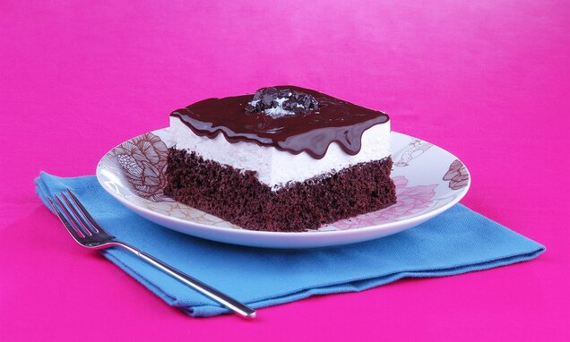
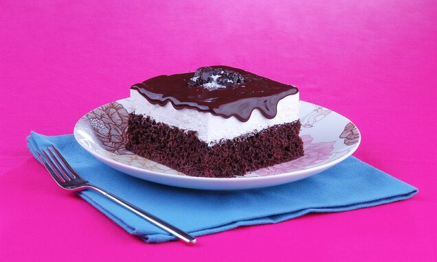

Kaç Kişilik: 6-8 kişilik
Hazırlanma Süresi:20 dakika
Pişme Süresi:35 dakika
Ağlayan kek yumuşacık keki, üzerindeki enfes sosu ve ağızda dağılan, muhteşem lezzeti ile insanın başını döndürecek güzelliğe sahiptir. Bu bunların yanında pratik yapılışı ile hemen bu tatlıyı yapmak ve keyfini kısa sürede çıkarmak mümkündür. O halde şimdi tatlının tarifine başlayalım.
Kaç Kişilik: 6-8 kişilik
Hazırlanma Süresi:20 dakika
Pişme Süresi:35 dakika
